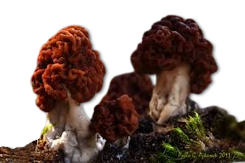
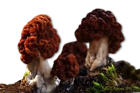

Descripción morfológica
Gyromitra esculenta, conocida como "falsa morel" o "bonete", es un ascomiceto de la familia Discinaceae. Su cuerpo fructífero (5-15 cm de altura) presenta un sombrero cerebral o irregularmente lobulado, de color marrón rojizo a marrón oscuro, con superficie cerebriforme que recuerda a una nuez. El pie es blanquecino o rosado, hueco y con surcos longitudinales. A diferencia de las verdaderas morillas (Morchella), el sombrero no está unido al pie en toda su longitud. Las esporas son elipsoidales, lisas, de 17-22 × 8-12 µm, con dos gútulas polares.
Características distintivas
- Morfología: Sombrero con pliegues irregulares que forman cavidades profundas (no alveolos regulares).
- Coloración: Tonalidades que varían del marrón chocolate al rojizo, dependiendo de la madurez.
- Contextura: Carne frágil y cerosa, con olor afrutado o terroso.
- Diferencias: Carece de la estructura de panal de abeja típica de Morchella.
Distribución y hábitat
Especie común en bosques de coníferas del hemisferio norte, especialmente bajo pinos (Pinus) en suelos arenosos. Aparece en primavera (abril-junio), a menudo después de incendios forestales. Su distribución abarca Europa, América del Norte y Asia, siendo especialmente abundante en Escandinavia y los países bálticos, donde tradicionalmente se ha consumido tras un procesamiento adecuado. Crece tanto en zonas bajas como montañosas, preferentemente en áreas con buena insolación.
Condiciones ecológicas
- Sustrato: Suelos ácidos (pH 4-6), frecuentemente en áreas quemadas o perturbadas.
- Temperatura: Fructifica cuando las temperaturas nocturnas superan los 5°C.
- Asociaciones: Puede formar relaciones micorrícicas con varias coníferas.
Toxicidad y composición química
Contiene gyromitrina (N-metil-N-formilhidrazona), un compuesto volátil que se metaboliza a monometilhidrazina (MMH), usado como combustible para cohetes. La MMH inhibe la vitamina B6, alterando la síntesis de GABA y causando síntomas neurológicos. La dosis letal se estima en 10-50 mg/kg (1-5 kg de hongos frescos). Los síntomas aparecen 6-12 horas post-ingesta: náuseas, vértigo, diarrea y, en casos graves, convulsiones y coma. La toxina es hidrosoluble y volátil, permitiendo su eliminación parcial mediante secado o cocción.
Factores de riesgo
- Variabilidad: La concentración de toxinas varía según ubicación geográfica.
- Acumulación: Efecto tóxico acumulativo tras exposiciones repetidas.
- Sensibilidad: Algunas personas son más susceptibles a dosis bajas.
Preparación tradicional y regulación
| Método | Efectividad |
|---|---|
| Hervido prolongado (2×15 min) | Elimina ~90% de gyromitrina (descartar agua de cocción) |
| Secado al aire (6 semanas) | Reduce toxinas en 95-99% |
| Congelación en crudo | No elimina toxinas (método peligroso) |
Situación legal y recomendaciones
- Prohibición: Venta prohibida en España, Italia y Alemania.
- Consumo: Legal en Finlandia y Suecia tras procesamiento controlado.
- Recomendación: Evitar completamente su consumo por riesgo de intoxicación.
Casos clínicos y tratamiento
- Intoxicaciones frecuentes en Europa del Este (confusión con morillas).
- Protocolo actual: piridoxina IV (25 mg/kg) para contrarrestar efectos neurológicos.
- La mortalidad es del 2-4% con tratamiento oportuno.
Investigación reciente
- Estudios genómicos sobre producción de gyromitrina (2021).
- Desarrollo de tests rápidos para detectar MMH en orina.
- Posible uso de toxinas derivadas en quimioterapia (estudios preliminares).